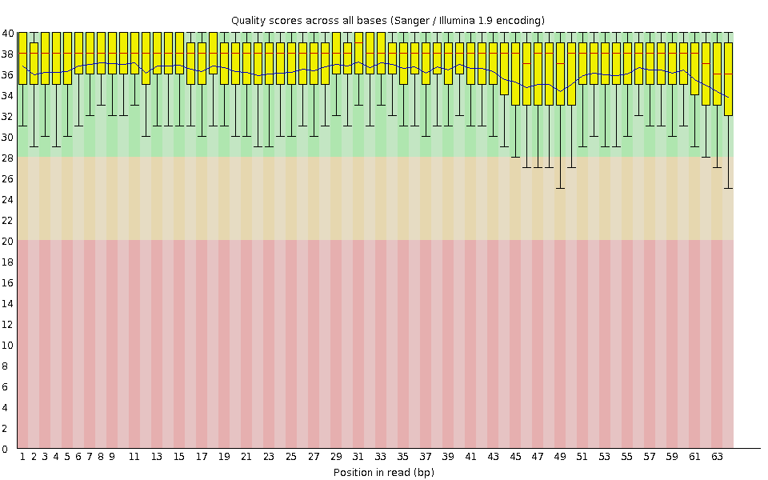
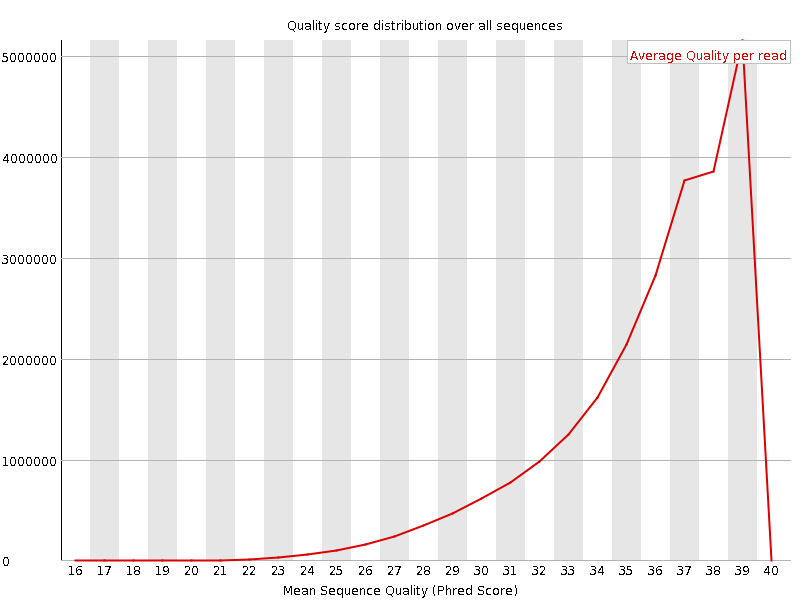
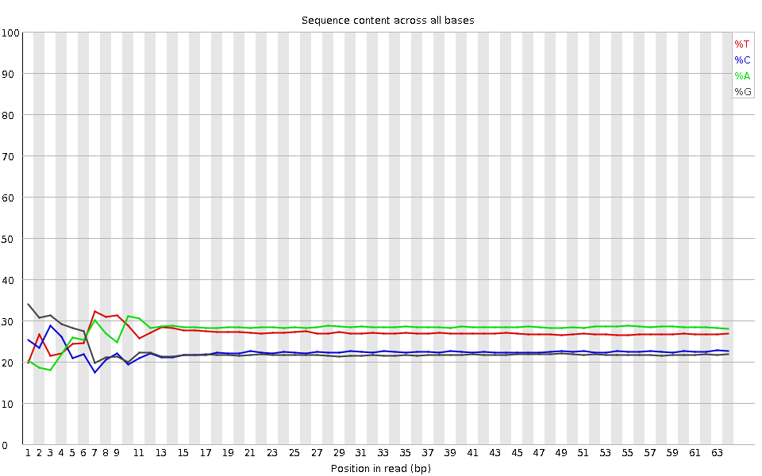
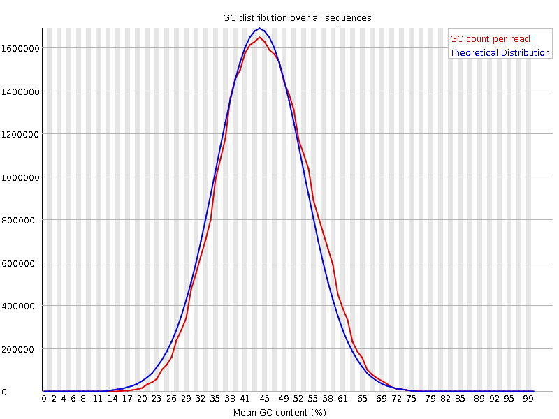
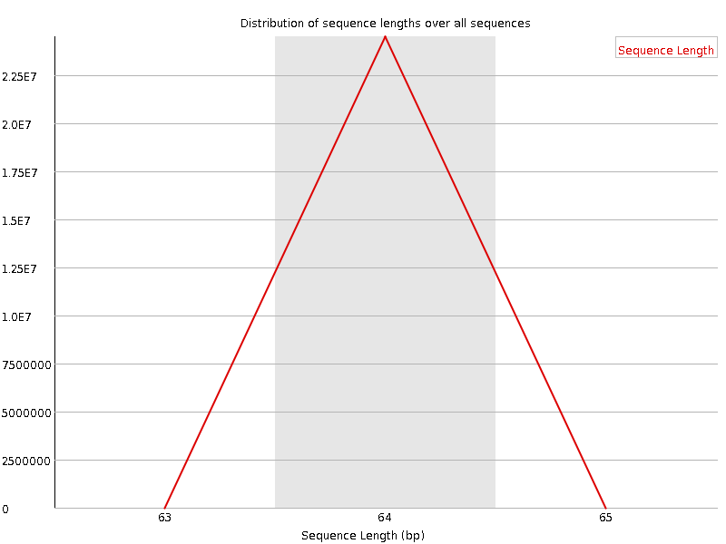
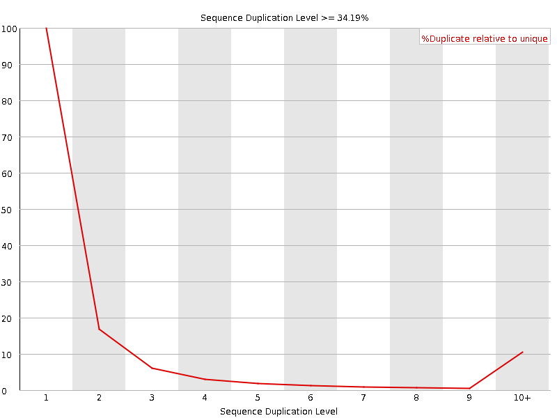
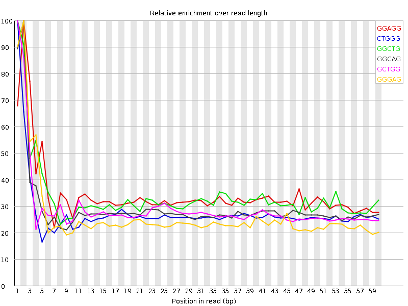

![[OK]](Icons/tick.png) Basic Statistics
Basic Statistics
| Measure | Value |
|---|---|
| Filename | SRR307930_pe_1.f.fastq |
| File type | Conventional base calls |
| Encoding | Sanger / Illumina 1.9 |
| Total Sequences | 24490238 |
| Filtered Sequences | 0 |
| Sequence length | 64 |
| %GC | 45 |
Per base sequence quality

Per sequence quality scores

![[WARN]](Icons/warning.png) Per base sequence content
Per base sequence content

![[FAIL]](Icons/error.png) Per base GC content
Per base GC content

Per sequence GC content

Per base N content

Sequence Length Distribution

Sequence Duplication Levels

Overrepresented sequences
No overrepresented sequences
Kmer Content

| Sequence | Count | Obs/Exp Overall | Obs/Exp Max | Max Obs/Exp Position |
|---|---|---|---|---|
| GGAGG | 2284480 | 2.1429012 | 6.2407794 | 2 |
| CTGGG | 2182815 | 2.132162 | 7.7285943 | 1 |
| GGCTG | 2140120 | 2.090458 | 6.222085 | 1 |
| GGCAG | 2075405 | 1.9551079 | 6.668491 | 2 |
| GCTGG | 1994220 | 1.9479434 | 6.6739492 | 1 |
| GGGAG | 2045700 | 1.9189194 | 7.2524405 | 2 |
| GGGCA | 1811345 | 1.7063537 | 6.6128163 | 1 |
| GGGGA | 1807130 | 1.6951345 | 8.865751 | 1 |
| TGGGG | 1736905 | 1.6893758 | 7.7129035 | 1 |
| GTGGG | 1708290 | 1.6615437 | 9.47707 | 1 |
| GGGGG | 1409235 | 1.6390871 | 11.360504 | 1 |
| GGGTG | 1663520 | 1.6179988 | 6.315518 | 2 |
| GGCCA | 1701555 | 1.6097819 | 5.409033 | 1 |
| GGGCT | 1495205 | 1.4605082 | 5.5691943 | 3 |
| GGGGT | 1472325 | 1.4320358 | 7.6545453 | 2 |
| AGGGG | 1500615 | 1.4076155 | 5.195631 | 1 |
| GGGGC | 1031155 | 1.2044693 | 6.3657904 | 2 |
| CGGGG | 631720 | 0.73789805 | 7.313685 | 1 |